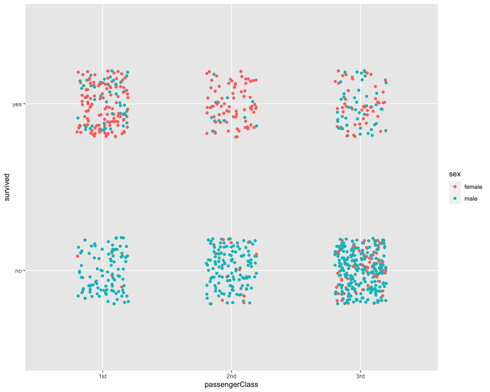
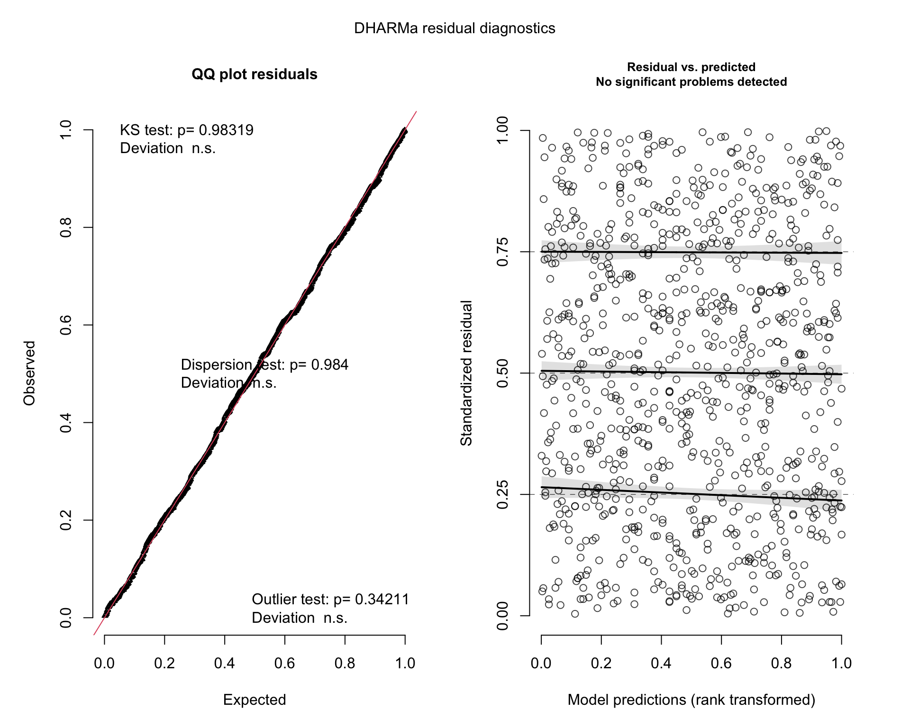

Chapter 7 Binomial GLM
In this section we will run a GLM with a binomial error distribution. We load the following packages:
library(tidyverse)
library(emmeans)
library(car)
library(agridat)
library(DHARMa)We will use the Titanic survival dataset for the binomial GLM.
## LOAD TITANIC SURVIVAL DATASET
data("TitanicSurvival")
t1 <- TitanicSurvival %>% filter(age>17) # filter out children
head(t1)## survived sex age passengerClass
## Allen, Miss. Elisabeth Walton yes female 29 1st
## Allison, Mr. Hudson Joshua Crei no male 30 1st
## Allison, Mrs. Hudson J C (Bessi no female 25 1st
## Anderson, Mr. Harry yes male 48 1st
## Andrews, Miss. Kornelia Theodos yes female 63 1st
## Andrews, Mr. Thomas Jr no male 39 1stLet’s quickly plot the data:
ggplot(t1, aes(x=passengerClass, y=survived, color=sex)) +
geom_jitter(height=.2, width=0.2)
Now we can construct a GLM to estimate survival as a function of sex and passengerClass while include Age as co-variate.
tglm1 <- glm(survived ~ sex * passengerClass + age, data=t1, family = binomial(link = "logit"))Let’s look at the summary of the model:
## print off anova table
Anova(tglm1)## Analysis of Deviance Table (Type II tests)
##
## Response: survived
## LR Chisq Df Pr(>Chisq)
## sex 270.225 1 < 2.2e-16 ***
## passengerClass 85.841 2 < 2.2e-16 ***
## age 8.419 1 0.003714 **
## sex:passengerClass 48.354 2 3.163e-11 ***
## ---
## Signif. codes: 0 '***' 0.001 '**' 0.01 '*' 0.05 '.' 0.1 ' ' 1## print off summary
summary(tglm1)##
## Call:
## glm(formula = survived ~ sex * passengerClass + age, family = binomial(link = "logit"),
## data = t1)
##
## Deviance Residuals:
## Min 1Q Median 3Q Max
## -2.7672 -0.6349 -0.4503 0.4438 2.5268
##
## Coefficients:
## Estimate Std. Error z value Pr(>|z|)
## (Intercept) 4.440409 0.637328 6.967 3.23e-12 ***
## sexmale -4.105505 0.540235 -7.599 2.97e-14 ***
## passengerClass2nd -1.709631 0.609577 -2.805 0.00504 **
## passengerClass3rd -3.957654 0.562147 -7.040 1.92e-12 ***
## age -0.025352 0.008945 -2.834 0.00459 **
## sexmale:passengerClass2nd -0.203867 0.698880 -0.292 0.77051
## sexmale:passengerClass3rd 2.655924 0.597510 4.445 8.79e-06 ***
## ---
## Signif. codes: 0 '***' 0.001 '**' 0.01 '*' 0.05 '.' 0.1 ' ' 1
##
## (Dispersion parameter for binomial family taken to be 1)
##
## Null deviance: 1191.35 on 891 degrees of freedom
## Residual deviance: 752.38 on 885 degrees of freedom
## AIC: 766.38
##
## Number of Fisher Scoring iterations: 6Now we can check residuals:
hist(resid(tglm1)) ## residuals should be normally distributed, even for glmplot(resid(tglm1)~fitted(tglm1)) + ## residuals should be evenly dispersed around 0 across the range of x's
abline(h=0) # funnel shapes or curvature is bad## integer(0)qqPlot(resid(tglm1)) ## residuals should line up pretty closely to the blue line## Allison, Mrs. Hudson J C (Bessi Harris, Mr. George
## 3 363boxplot(resid(tglm1) ~ t1$passengerClass) ## variances should be homogeneous for each group## simulate residuals
plot(simulateResiduals(tglm1)) ## plot simulated residuals
hist(simulateResiduals(tglm1)) ## histogram should be flatTo make sense of the model output let’s use the emmeans package:
emmeans(tglm1, pairwise ~ sex:passengerClass)## $emmeans
## sex passengerClass emmean SE df asymp.LCL asymp.UCL
## female 1st 3.592 0.516 Inf 2.580 4.6034
## male 1st -0.514 0.192 Inf -0.890 -0.1371
## female 2nd 1.882 0.325 Inf 1.246 2.5183
## male 2nd -2.427 0.303 Inf -3.022 -1.8324
## female 3rd -0.366 0.203 Inf -0.764 0.0322
## male 3rd -1.815 0.170 Inf -2.149 -1.4814
##
## Results are given on the logit (not the response) scale.
## Confidence level used: 0.95
##
## $contrasts
## contrast estimate SE df z.ratio p.value
## female 1st - male 1st 4.106 0.540 Inf 7.599 <.0001
## female 1st - female 2nd 1.710 0.610 Inf 2.805 0.0567
## female 1st - male 2nd 6.019 0.602 Inf 9.997 <.0001
## female 1st - female 3rd 3.958 0.562 Inf 7.040 <.0001
## female 1st - male 3rd 5.407 0.551 Inf 9.810 <.0001
## male 1st - female 2nd -2.396 0.377 Inf -6.354 <.0001
## male 1st - male 2nd 1.913 0.364 Inf 5.262 <.0001
## male 1st - female 3rd -0.148 0.291 Inf -0.507 0.9959
## male 1st - male 3rd 1.302 0.270 Inf 4.826 <.0001
## female 2nd - male 2nd 4.309 0.444 Inf 9.700 <.0001
## female 2nd - female 3rd 2.248 0.383 Inf 5.872 <.0001
## female 2nd - male 3rd 3.698 0.367 Inf 10.088 <.0001
## male 2nd - female 3rd -2.061 0.362 Inf -5.699 <.0001
## male 2nd - male 3rd -0.612 0.344 Inf -1.776 0.4812
## female 3rd - male 3rd 1.450 0.255 Inf 5.678 <.0001
##
## Results are given on the log odds ratio (not the response) scale.
## P value adjustment: tukey method for comparing a family of 6 estimatesWe can obtain back-transformed means:
emmeans(tglm1, pairwise ~ sex:passengerClass, type="response") ## type= does contrasts before back-transforming (more appropriate!)## $emmeans
## sex passengerClass prob SE df asymp.LCL asymp.UCL
## female 1st 0.9732 0.0135 Inf 0.9296 0.990
## male 1st 0.3743 0.0450 Inf 0.2911 0.466
## female 2nd 0.8679 0.0372 Inf 0.7766 0.925
## male 2nd 0.0811 0.0226 Inf 0.0465 0.138
## female 3rd 0.4096 0.0491 Inf 0.3178 0.508
## male 3rd 0.1400 0.0205 Inf 0.1044 0.185
##
## Confidence level used: 0.95
## Intervals are back-transformed from the logit scale
##
## $contrasts
## contrast odds.ratio SE df null z.ratio p.value
## female 1st / male 1st 60.6734 32.7779 Inf 1 7.599 <.0001
## female 1st / female 2nd 5.5269 3.3691 Inf 1 2.805 0.0567
## female 1st / male 2nd 411.1685 247.5444 Inf 1 9.997 <.0001
## female 1st / female 3rd 52.3344 29.4197 Inf 1 7.040 <.0001
## female 1st / male 3rd 223.0141 122.9249 Inf 1 9.810 <.0001
## male 1st / female 2nd 0.0911 0.0343 Inf 1 -6.354 <.0001
## male 1st / male 2nd 6.7768 2.4645 Inf 1 5.262 <.0001
## male 1st / female 3rd 0.8626 0.2514 Inf 1 -0.507 0.9959
## male 1st / male 3rd 3.6756 0.9915 Inf 1 4.826 <.0001
## female 2nd / male 2nd 74.3937 33.0509 Inf 1 9.700 <.0001
## female 2nd / female 3rd 9.4690 3.6250 Inf 1 5.872 <.0001
## female 2nd / male 3rd 40.3505 14.7906 Inf 1 10.088 <.0001
## male 2nd / female 3rd 0.1273 0.0460 Inf 1 -5.699 <.0001
## male 2nd / male 3rd 0.5424 0.1868 Inf 1 -1.776 0.4812
## female 3rd / male 3rd 4.2613 1.0878 Inf 1 5.678 <.0001
##
## P value adjustment: tukey method for comparing a family of 6 estimates
## Tests are performed on the log odds ratio scaleIn order to plot we need to create new variable that is 0 or 1.
t1$surv <- if_else(t1$survived=='yes',1,0)Now we can make a plot with regression lines:
ggplot(t1, aes(x=age, y=surv, color=sex)) +
geom_jitter(height=.1, width=0) +
geom_smooth(method="glm",
method.args=list(family="binomial"),
formula = y ~ x, se=F, lwd=1.5) +
facet_wrap(~passengerClass) +
theme_bw(base_size = 20)We can improve the aesthetics of the plot:
tm <- emmeans(tglm1, ~ sex:passengerClass, type="response") %>% as.data.frame()
cbPalette <- c("#E69F00", "#56B4E9", "#009E73", "#F0E442", "#0072B2", "#D55E00", "#CC79A7")
plot1 <- ggplot() +
geom_jitter(data=t1 %>% filter(sex=='female'),
aes(x=passengerClass, y=surv+.01),
height=0, width=.25, size=1,
alpha=.1, color="#E69F00") +
geom_jitter(data=t1 %>% filter(sex=='male'),
aes(x=passengerClass, y=surv-.01),
height=0, width=.25, size=1,
alpha=.1, color="#56B4E9") +
geom_errorbar(data=tm,
aes(x=passengerClass,
y=prob, ymin=(prob-SE),
ymax=(prob+SE), color=sex),
width=.2, lwd=1.25,
position = position_dodge(width=0.5)) +
## make bars thinner
geom_point(data=tm ,
aes(x=passengerClass, y=prob, color=sex),
size=5,
position=position_dodge(width=0.5)) +
scale_y_continuous('survival', labels = scales::percent) +
scale_color_manual(values=cbPalette) +
theme(panel.background = element_blank(),
panel.border = element_rect(color="black",
fill=NA, size=2)) +
theme(axis.ticks.length=unit(0.3, "cm"),
axis.text.x = element_text(margin=margin(5,5,5,5,"pt"),colour="black"),
axis.text.y = element_text(margin=margin(5,5,5,5,"pt"),colour="black")) + ## change axis tick marks to make them a little longer
#theme(axis.text.x = element_text(angle = 45, vjust = 1, hjust=1)) +
theme(text = element_text(size=20))
plot1plot2 <- ggplot() +
geom_jitter(data=t1 ,
aes(x=passengerClass, y=surv,
color=passengerClass),
height=.01, width=.35,
size=1, alpha=.2) +
geom_errorbar(data=tm ,
aes(x=passengerClass,
y=prob, ymin=(prob-SE),
ymax=(prob+SE),
color=passengerClass),
width=.2, lwd=1.25) + ## make bars thinner
geom_point(data=tm ,
aes(x=passengerClass,
y=prob, color=passengerClass), size=5) +
facet_wrap(~sex) +
scale_y_continuous('survival', labels = scales::percent) +
scale_color_manual(values=cbPalette) +
theme(panel.background = element_blank(),
panel.border = element_rect(color="black", fill=NA, size=2)) +
theme(axis.ticks.length=unit(0.3, "cm"),
axis.text.x = element_text(margin=margin(5,5,5,5,"pt"),colour="black"),
axis.text.y = element_text(margin=margin(5,5,5,5,"pt"),colour="black")) +
theme(text = element_text(size=20))
plot2